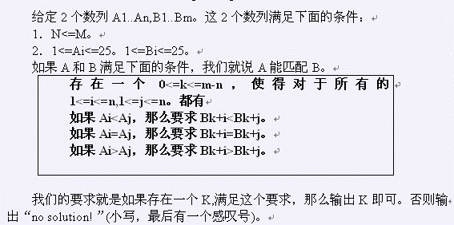

第1行有一个T。表示一共有T组数据。 每个数据的描述如下： 首先2个数n,m。然后n个数，描述Ai数列，接下来m个数，描述Bi数列。
一行对应一个数据。 如果有解，输出k。否则输出“no solution!”
2 5 9 1 1 1 1 1 2 2 2 2 1 1 1 1 1 4 6 1 2 3 2 1 3 5 7 6 4
4 no solution!
1<=T<=10。 1<=N<=10000。 1<=M<=100000。